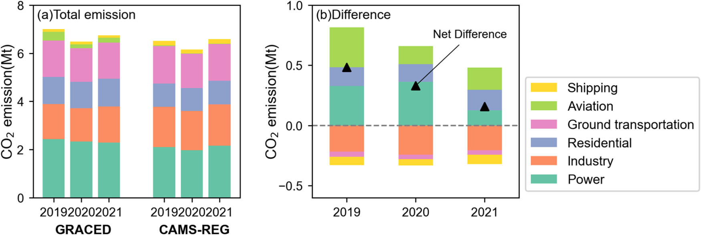
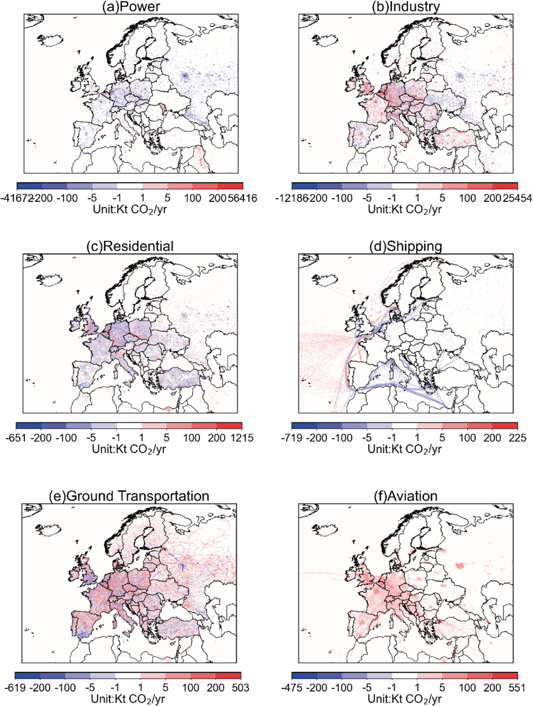

Background
The development of high-resolution dynamic CO2 emission inventories plays an important role in targeting mitigation actions and understanding atmospheric CO2 variations. High-resolution CO₂ emission inventories help pinpoint emission hotspots and trends, support subnational mitigation policies, and provide essential priors for atmospheric carbon flux inversions. While prior studies focused on the comparisons of gridded emissions in specific countries or cities, few examined recent gridded CO2 emission maps across the entire Europe.
Method
This study provides the comparative analysis of two high spatiotemporal resolution inventory products: the Copernicus Atmosphere Monitoring Service regional inventory (CAMS-REG, v6 for 2019–2020 and v7 for 2021) and the near-real-time global gridded daily CO2 emission data set (GRACED, latest updated version May 2024). The spatial resolution of GRACED and CAMS-REG is 0.1° × 0.1° and 0.05° × 0.1°, respectively. The temporal resolution of both data sets is daily. Our analysis spans diverse scales, encompassing country-level trends, spatial patterns, and temporal dynamics, providing an understanding of CO2 emissions in Europe between 2019 and 2021.
Wrap-Up
CAMS-REG and GRACED demonstrate comparable estimates in total emissions (with a 2.4% difference in 2021) and similar spatial patterns (R = 0.66 in 2021), and for key sectors such as power, the shared grid layouts between CAMS-REG’s and GRACED’s power databases in EU27 & U.K. strongly correlate (R = 0.74 in 2021).

Fig 1. Sectoral aggregated CO2 emission of GRACED and CAMS-REG in the domain (30°W–60°E and 30°N–72°N), 2019–2021. (a) Total emission. (b) Difference, GRACED minus CAMS-REG.
However, substantial sectoral discrepancies are observed. For example, GRACED reports an approximately 40% underestimation in industrial emissions for Germany and Italy relative to the official data employed by CAMS-REG. At the grid level, the absolute value of the median of relative percent difference (RPD) of power, ground transportation, and shipping across the domain all reach 200%. The large sectoral differences indicate that for the cases that use extrapolation methods with many assumptions such as GRACED, it is necessary to update the baseline or add constraints to avoid the accumulation of errors. CAMS-REG is recommended for fine-scale historical emission analysis in Europe due to its higher spatial resolution and the use of localized data sets. GRACED, with a maximum latency of 3 months, is more appropriate for applications requiring near-real-time data.

Fig 2. Sectoral difference of emission spatial distributions in 2021. For power, industry, residential, and ground transportation sectors, country-level CO2 emissions of GRACED are scaled to the same level as CAMS-REG. For aviation and shipping, GRACED is not adjusted. The difference is calculated by adjusted GRACED–CAMS–REG.